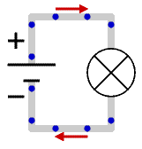
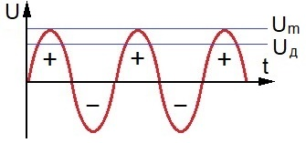
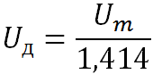
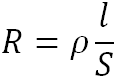
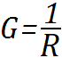
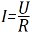
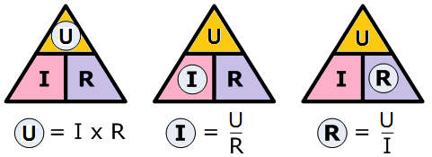

Электрический ток
Электрический ток (ток) - направленное движение электрических зарядов (электронов) под действием сил электрического поля. Для движения электрических зарядов необходимо иметь замкнутый электрический контур (канал, электрическая цепь) между положительным и отрицательным полюсами источника питания. Если контур не замкнут, то движение зарядов прекращается и ток отсутствует.

За положительное направление электрического тока условно принят направление движения положительных зарядов (на рисунке 1 показано стрелками), хотя реальными носителями заряда являются электроны (на рисунке синие точки). Сила тока определяется количеством заряда, проходящего через сечение проводника в единицу времени. Основная единица измерения силы тока - ампер (А). При токе 1 А за одну секунду через цепь проходит примерно 1018 единичных зарядов, равных заряду электронов. В практических измерениях количество зарядов не фиксируется, а значение тока выражается в амперах или производных от этой основной единицы:
1 мА = 0,001 А (один милиампер равен 0,001 А),
1 мкА = 0,001 мА = 0,000001 А (один микроампер (мкА) равен 0,001 мА или 0,000001 А).
Напряжение
Напряжение - это разность электрических потенциалов между двумя точками электрической цепи. Напряжение - это та сила, под действием которой в электрической цепи движутся электрические заряды, т.е. протекает электрический ток. Ток и напряжение взаимосвязаны, так как важна не только разность потенциалов сама по себе, а важен и электрический ток, обусловленный этой разностью потенциалов. Поэтому при описании работы электрических цепей ток и напряжение, как правило, фигурируют вместе.
Для того чтобы понять различия между напряжением и током, надо рассматривать ток как некоторое материальное тело, а напряжение как силу, действующую на него. Поэтому результат воздействия электрического тока будет зависеть как от силы тока, так и от напряжения, вызвавшего этот ток.
Можно выделить две группы источников электрической энергии: источники напряжения и источники тока. Напряжение между выходными полюсами источника напряжения не зависит или слабо зависит от тока, отдаваемого источником во внешнюю цепь (нагрузку). В источниках тока, напротив, выходной ток почти не зависит от напряжения на его полюсах, которое определяется нагрузкой.
Основной единицей измерения разности потенциалов является вольт (В). На практике часто применяются производные от основной единицы измерения напряжения
1 мВ = 0,001 В (один милливольт (мВ) равен 0,001 В),
1 мкВ = 0,001 мВ = 0,000001 В (один микровольт (мкА) равен 0,001 мВ или 0,000001 В),
1 кВ = 1000 В (один киловольт (кВ) равен 1000 В),
1 МВ = 1000 кВ (один мегавольт (МВ) равен 1000 кВ.
Различают переменное напряжение и постоянное напряжение.
Аккумуляторная батарея - это типичный источник постоянного напряжения. Для питания электронных схем применяются преимущественно источники постоянного напряжения.
Промышленная электросеть - типичный источник переменного напряжения. Если в цепях постоянного напряжения полярность полюсов фиксирована и один из полюсов всегда положителен, а другой отрицателен, то в источниках переменного напряжения полярность постоянно меняется. В первой половине периода один из полюсов имеет отрицательную полярность, а другой - положительную. Во второй половине полярности полюсов меняются. Быстрота смены полярности в цепях переменного тока измеряется в герцах (Гц). Частота сети переменного тока в Российской Федерации равна 50 Гц, т.е. в течение одной секунды происходит 50 циклов (периодов) смены полярности напряжения. Для примера, в США она равна 60 Гц.
Переменный электрический ток
Напряжение переменного электрического тока периодически изменяется. Форма волны переменного тока, получаемого от электросети, называется синусоидальной (рис. 2). Различные другие типы волн переменного напряжения могут формироваться разнообразными электронными схемами, но они не относятся к классической форме переменного напряжения.

Синусоида на рисунке 3 иллюстрирует форму стандартной волны переменного напряжения, которую можно увидеть на экране осциллографа, подключённого к сетевой розетке. В какой-то момент времени напряжение равно нулю, затем его значение увеличивается, стремясь к максимальному, называемому амплитудным, значению. На этом завершается первая половина цикла (периода) переменного напряжения. Можно обратить внимание, что на этом участке изменяющееся напряжение имеет положительную полярность. После завершения первой половины волны кривая проходит через нулевую отметку и образует зеркальное отражение прежней формы волны, имеющее отрицательную полярность. После достижения минимального значения напряжение вновь возвращается к нулю. В этой точке завершается полная волна переменного напряжения.
Бытовые сети переменного электрического тока преимущественно имеют номинальное значение напряжения, равное 220 В. Значение напряжения в начале периода равно нулю, затем увеличивается до положительного максимума в 310 В, после чего уменьшается до нуля и, прежде чем завершится период, достигает максимального отрицательного значения 310 В. 220 В - это действующее значение переменного напряжения. Оно даёт такой же нагревательный (тепловой) эффект, как и 220 В постоянного тока. Значение 220 В часто называют среднеквадратичным значением переменного напряжения. Максимальное амплитудное значение переменного напряжения равняется действующему значению, умноженному на 1,414.
Между действующим U и амплитудным Um значениями переменного напряжения имеется соответствие:

Проводники и диэлектрики
В веществе, помещённом в электрическое поле, под действием сил этого поля возникает процесс движения свободных зарядов в направлении сил поля. Способность вещества переносить электрические заряды под действием электрического поля называется электропроводностью вещества. Электропроводность вещества зависит от концентрации свободных электрических заряженных частиц. При высокой концентрации зарядов электропроводность вещества больше, чем при малой.
Все тела в зависимости от электропроводности можно разделить на три группы: проводники, полупроводники и диэлектрики (изоляторы).
Проводником принято называть такое тело, в объёме которого имеется много свободных зарядов. Зарядов, способных перемещаться внутри этого объёма. Различают проводники с электронной проводимостью (проводники первого рода) и проводники с ионной проводимостью (проводники второго рода).
К проводникам первого рода относятся все металлы и металлические сплавы. В объёме металлического тела имеется много свободных электронов, которые являются носителями электричества в таких проводниках. К проводникам второго рода относятся электролиты, представляющие собой водные растворы кислот, щелочей, солей и др. В электролитах носителями электричества являются ионы, на которые распадаются молекулы растворённого вещества.
Диэлектриками называются тела, в объёме которых содержится очень мало свободных электронов. Поэтому они почти не проводят электрический ток и говорят что у них очень низкая электропроводность вещества. К диэлектрикам относятся различные пластмассы, смолы, лаки, стекло, дерево и т.п.
К полупроводникам относятся такие тела, которые по своим проводящим свойствам занимают среднее положение между проводниками и диэлектриками. Например германий, кремний, селен и ряд искусственных соединений.
Электрическое сопротивление
Электрическое сопротивление проводника возникает при протекании по проводнику электрического тока. Т.е., когда при движении по проводнику электронов, происходит столкновение этих электронов с атомами проводника. При таком столкновении движущийся электрон выбивает из атома один из его свободных электронов и становится на его место, а часть энергии, полученной электроном от источника ЭДС, превращается в тепло, которое нагревает проводник. Выбитый электрон обладает уже меньшей энергией и с меньшей силой ударяет в следующий атом. Подобные столкновения испытывают многие, движущиеся по проводнику электроны, вследствие чего скорость их движения уменьшается и через поперечное сечение проводника будет протекать меньшее количество электронов (сила тока в цепи уменьшается). Можно сказать, что проводник оказывает противодействие протекающему по нему электрическому току.
Чем длиннее проводник, меньше его поперечное сечение и больше его удельное сопротивление, тем больше сопротивление данного проводника.

где:
R - сопротивление проводника;
L - длина проводника;
ρ - удельное сопротивление материала проводника;
S - площадь поперечного сечения проводника.
Для измерения величины сопротивления введена единица измерения, которая носит название Ом. Сопротивлением в 1 Ом обладает ртутный столбик высотой в 106 см и поперечным сечением 1 мм2 при температуре 20° С (международный эталон).
Иногда электропроводящие свойства проводника характеризуют не сопротивлением, а величиной, ему обратной. Эта величина носит название проводимости материалов

Закон Ома для участка цепи
Закон Ома для участка цепи показывает отношения между напряжением (U), током (I) и сопротивлением (R): сила тока в участке цепи прямо пропорциональна напряжению на концах участка и обратно пропорциональна сопротивлению этого участка.

где:
U - напряжение в вольтах (В);
I - сила тока в амперах (А);
R - сопротивление в омах (Ом).
Чтобы запомнить три разные версии определения Закона Ома, можно воспользоваться UIR-треугольником (рис. 3).

- Если надо вычислить напряжение, закрываем пальцем U. У нас остаются I и R. Они на одном уровне, значит между ними ставим знак умножения. Получается U = I × R .
- Если вычисляем ток, закрываем пальцем I. У нас остаётся U над R. Значит напряжение делится на сопротивление - I = U/R .
- При вычислении сопротивления закрываем R. Остаётся U над I. Значит R = U/I .
Пройти тест "Электрический ток"
Источники
katod-anod.ru - Напряжение
katod-anod.ru - Электрический ток
katod-anod.ru - Переменный электрический ток
katod-anod.ru - Действующее значение переменного напряжения
katod-anod.ru - Электрическое сопротивление проводника
katod-anod.ru - Закон Ома, определение
katod-anod.ru - Проводники и диэлектрики